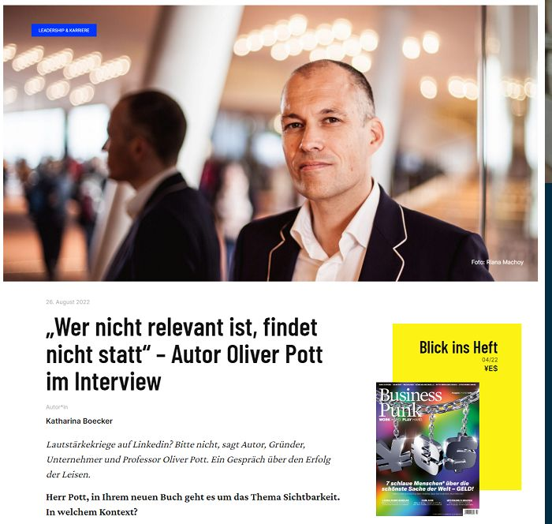
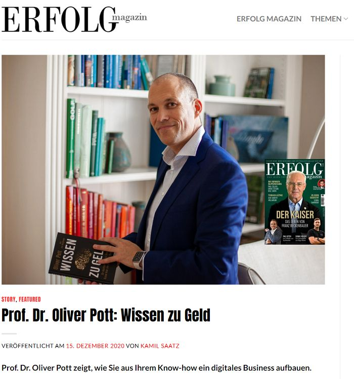
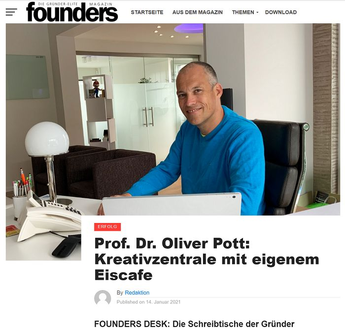
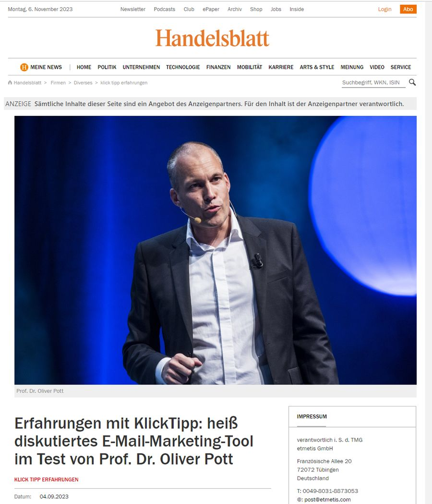

Presse
Dr. Oliver Pott in der nationalen und internationalen Presse
Bekannt aus


Forbes
„Dr. Oliver Pott knows a thing or two about growing companies and increasing visibility. He has been referred to as one of the most successful Internet entrepreneurs in the German-speaking world. Pott has been growing European Internet technology businesses since 1999.“Read full article here

Business Punk
„Wer nicht relevant ist, findet nicht statt. Autor Oliver Pott im Interview.“Artikel hier lesen

ERFOLG Magazin
„Prof. Dr. Oliver Pott zeigt, wie Sie aus Ihrem Know-how ein digitales Business aufbauen.“Artikel hier lesen

Inc. Magazine
„How to Grab and Keep Your Customers' Attention – and why being quiet is more important in marketing today. Dr. Oliver Pott talks about it in VISIBLE!“Read full article here

Founder's Magazin
„Prof. Dr. Oliver Pott: Kreativzentrale mit eigenem Eiscafe“Artikel hier lesen

Men's Journal USA
„With years of experience up his sleeve, it’s no wonder that Oliver Pott is such a major success in the business world.“Read full article here

Los Angeles Weekly
„Meet Oliver Pott, A Leading Digital Founder Whose Interlocking Method Of Three Is Guiding Entrepreneurs To Greatness“Read full article here

International Business Times
„Business maverick and seasoned entrepreneur Oliver Pott says there are actually three f-words that should be in every business owner's dictionary, and no, the one you are thinking of is not part of the trio.“Read full article here

InTouch USA
„Pott holds the title of Professor in Paderborn and has been teaching business start-ups and internet marketing for 12 years. With his extensive experience and knowledge in the field, Pott wrote a book to help others navigate this tricky industry.“Read full article here

Handelsblatt
Gemeinsam mit Rechtsanwalt Dr. Stefan Gärtner habe ich die E-Mail-Software KlickTipp bewertet.KlickTipp Erfahrungen
Kontakt
Kontakt zu Dr. Oliver Pott
Pressebüro für den deutschsprachigen Raum
Buchcontact
Murielle Rousseau
Karl-Heinrich-Ulrichs-Str. 20c
10785 Berlin
www.buchcontact.de
Direktkontakt zu Dr. Oliver Potts Privatbüro
Stefanie Sommerfeld, Personal Assistant
sommerfeld@pott-holding.de
Durchwahl 05251/68895-93
Sprecheragentur für den deutschsprachigen Raum
Speaker's Excellence GmbH
Adlerstraße 41
70199 Stuttgart
0711 20 52 87 7252
www.speakers-excellence.de